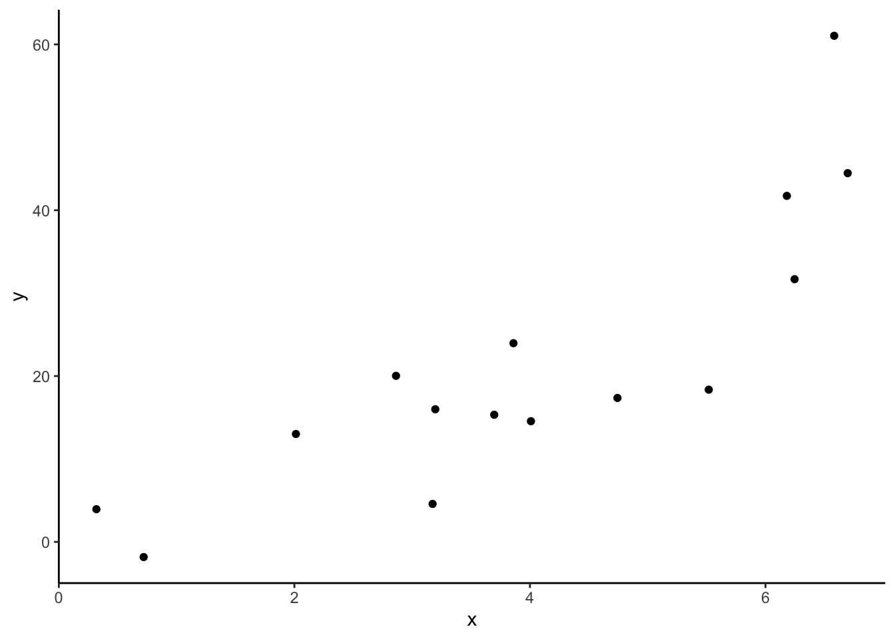

Topic 3 Overfitting
Learning Goals
- Explain why training/in-sample model evaluation metrics can provide a misleading view of true test/out-of-sample performance
- Implement testing and training sets in R using the
tidymodelspackage
Slides from today are available here.
The tidymodels package
Over this course, we will looking at a broad but linked set of specialized tools applied in statistical machine learning. Specialized tools generally require specialized code.
Each tool has been developed separately and coded in a unique way. In order to facilitate and streamline the user experience, there have been attempts at creating a uniform interface, such as the caret R package. The developers of the caret package are no longer maintaining those packages. They are working on a newer package, called tidymodels.
In this class, we will use the tidymodels package, which uses the tidyverse syntax you learned in Stat 155. The tidymodels package is a relatively new package and continues to be developed as we speak. This means that I’m learning with you and in a month or two, there may be improved functionality.
As I introduced in the R code videos, we have a general workflow structure that includes a model specification and a recipe (formula + preprocessing steps).
# Load the package
library(tidymodels)
tidymodels_prefer()
# Set the seed for the random number generator
set.seed(123)
# Specify Model
model_spec <-
linear_reg() %>% # type of model
set_engine(engine = __) %>% # algorithm to fit the model
set_args(__) %>% # hyperparameters/tuning parameters are needed for some models
set_mode(__) # regression or classification
# Specify Recipe (if you have preprocessing steps)
rec <- recipe(formula, data) %>%
step_{FILLIN}() %>%
step_{FILLIN}()
# Create Workflow (Model + Recipe)
model_wf <- workflow() %>%
add_recipe(rec) %>% #or add_formula()
add_model(model_spec)We can fit that workflow to training data.
# Fit Model to training data (without a recipe)
fit_model <- fit(model_spec, formula, data_train)
# Fit Model & Recipe to training data
fit_model <- fit(model_wf, data_train)And then we can evaluate that fit model on testing data (new data that has not been used to fit the model).
# Evaluate on testing data
model_output <- fit_model %>%
predict(new_data = data_test) %>% # this function will apply recipe to new_data and do prediction
bind_cols(data_test)
reg_metrics <- metric_set(rmse, rsq, mae)
model_output %>%
reg_metrics(truth = __, estimate = .pred)The power of tidymodels is that it allows us to streamline the vast world of machine learning techniques into one common syntax. On top of "lm", there are many other different machine learning methods that we can use.
In the exercises below, you’ll need to adapt the code above to fit a linear regression model (engine = "lm").
Exercises
You can download a template RMarkdown file to start from here.
Context
We’ll be working with a dataset containing physical measurements on 80 adult males. These measurements include body fat percentage estimates as well as body circumference measurements.
fatBrozek: Percent body fat using Brozek’s equation: 457/Density - 414.2fatSiri: Percent body fat using Siri’s equation: 495/Density - 450density: Density determined from underwater weighing (gm/cm^3).age: Age (years)weight: Weight (lbs)height: Height (inches)neck: Neck circumference (cm)chest: Chest circumference (cm)abdomen: Abdomen circumference (cm)hip: Hip circumference (cm)thigh: Thigh circumference (cm)knee: Knee circumference (cm)ankle: Ankle circumference (cm)biceps: Biceps (extended) circumference (cm)forearm: Forearm circumference (cm)wrist: Wrist circumference (cm)
It takes a lot of effort to estimate body fat percentage accurately through underwater weighing. The goal is to build the best predictive model for fatSiri using just circumference measurements, which are more easily attainable. (We won’t use fatBrozek or density as predictors because they’re other outcome variables.)
library(readr)
library(ggplot2)
library(dplyr)
library(tidymodels)
tidymodels_prefer()
bodyfat_train <- read_csv("https://www.dropbox.com/s/js2gxnazybokbzh/bodyfat_train.csv?dl=1")## Rows: 80 Columns: 17## ── Column specification ────────────────────────────────────────────────────────
## Delimiter: ","
## dbl (17): fatBrozek, fatSiri, density, age, weight, height, neck, chest, abd...##
## ℹ Use `spec()` to retrieve the full column specification for this data.
## ℹ Specify the column types or set `show_col_types = FALSE` to quiet this message.# Remove the fatBrozek and density variables (and one variable that a replicate of others)
bodyfat_train <- bodyfat_train %>%
select(-fatBrozek, -density, -hipin)Exercise 1: 5 models
Consider the 5 models below:
lm_spec <-
linear_reg() %>%
set_engine(engine = 'lm') %>%
set_mode('regression')
mod1 <- fit(lm_spec,
fatSiri ~ age+weight+neck+abdomen+thigh+forearm,
data = bodyfat_train)
mod2 <- fit(lm_spec,
fatSiri ~ age+weight+neck+abdomen+thigh+forearm+biceps,
data = bodyfat_train)
mod3 <- fit(lm_spec,
fatSiri ~ age+weight+neck+abdomen+thigh+forearm+biceps+chest+hip,
data = bodyfat_train)
mod4 <- fit(lm_spec,
fatSiri ~ ., # The . means all predictors
data = bodyfat_train)
bf_recipe <- recipe(fatSiri ~ ., data = bodyfat_train) %>%
step_normalize(all_numeric_predictors())
bf_wf <- workflow() %>%
add_recipe(bf_recipe) %>%
add_model(lm_spec)
mod5 <- fit(bf_wf,
data = bodyfat_train) STAT 155 review: Look at the
tidy()ofmod1. Contextually interpret the coefficient for the weight predictor. Is anything surprising? Why might this be?Explain how mod5 is different than mod4. You may want to look at
bf_recipe %>% prep(bodyfat_train) %>% juice()to see the preprocessed training data.Which model will have the lowest training RMSE, and why? Explain before calculating (that is part d).
Compute the training RMSE for models 1 through 5 to check your answer for part c. Write a sentence interpreting one of values of RMSE in context.
Which model do you think is the “best”? You may calculate MAE and R squared as well to justify your answer.
Which model do you think will perform worst on new test data? Why?
Exercise 2: Visualizing Predictions
- Sequentially run the code below, ending before pipe, comma, or +. For each row of code below, discuss what it does. Add comments to the end of the line after the pipe (with # in front) to explain what each line does.
mod5 %>% #comment here
tidy() %>% #
slice(-1) %>% #
mutate(lower = estimate - 1.96*std.error, upper = estimate + 1.96*std.error) %>% #
ggplot() + #
geom_vline(xintercept=0, linetype=4) + #
geom_point(aes(x=estimate, y=term)) + #
geom_segment(aes(y=term, yend=term, x=lower, xend=upper), arrow = arrow(angle=90, ends='both', length = unit(0.1, 'cm'))) + #
labs(x = 'Coefficient estimate (95% CI)', y = 'Feature') + #
theme_classic() #- Sequentially run each line of code (below), end before pipe or comma. For each row of code below, discuss what it does. Add comments to the end of the line after the pipe (with # in front) to explain what each line does.
bodyfat_train %>% #
mutate(id = row_number()) %>% #
pivot_longer(-c(fatSiri, id), names_to = 'key', values_to = 'value') %>% #
right_join( #
(mod4 %>% tidy() %>% slice(-1) %>% select(term, estimate)), #
by = c('key'='term')
) %>% #right_join finishes here
mutate(effect = value * estimate) %>% #
ggplot(aes(x = effect, y = key)) + #
geom_boxplot() + #
geom_vline(xintercept = 0, color = 'grey') + #
labs(x = 'Effect/Contribution to Predicted BodyFat Percent', y = 'Feature') + #
theme_classic() #Exercise 3: Evaluating on Test Data
Now that you’ve thought about how well the models might perform on test data, deploy it in the real world by applying it to a new set of 172 adult males. You’ll need to update the new_data to use bodyfat_test instead of bodyfat_train.
bodyfat_test <- read_csv("https://www.dropbox.com/s/7gizws208u0oywq/bodyfat_test.csv?dl=1")# Use fit/trained models and evaluate on test dataCalculate the test RMSE, MAE, and R squared for all five of the models.
Look back to Exercise 1 and see which model you thought was “best” based on the training data. Is that the “best” model in terms of predicting on new data? Explain.
In “real life” we only have one data set. To get a sense of predictive performance on new test data, we could split our data into two groups. Discuss pros and cons of ways you might split the data. How big should the training set be? How big should the testing set be?
Exercise 4: Overfitting
If you have time, consider the following relationship. Imagine a set of predictions that is overfit to this training data. You are not limited to lines. Draw a picture of that function of predictions on a piece of paper.
set.seed(123)
data_train <- tibble::tibble(
x = runif(15,0,7),
y = x^2 + rnorm(15,sd = 7)
)
data_train %>%
ggplot(aes(x = x, y = y)) +
geom_point() +
theme_classic()